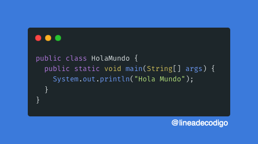
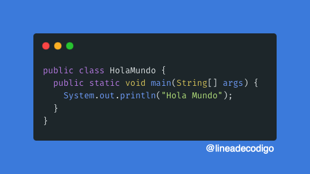
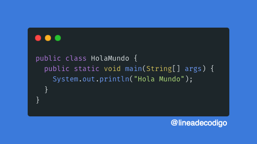

La orientación a objetos en Java es pura y estricta - todo debe estar contenido dentro de clases, con excepción de los tipos primitivos. Este enfoque radical favorece la organización del código y el diseño modular. El sistema de tipos estático proporciona seguridad en tiempo de compilación, detectando errores antes de la ejecución, mientras que la recolección de basura automática libera a los desarrolladores de la tediosa gestión manual de memoria, característica que contrasta marcadamente con lenguajes como C++. La sintaxis de Java, aunque verbosa en comparación con lenguajes más modernos, ofrece claridad y consistencia. La ausencia de características como operador sobrecargado o herencia múltiple (reemplazada por interfaces) fue una decisión deliberada para mantener la simplicidad y evitar ambigüedades. Las excepciones verificadas representan otro rasgo distintivo, forzando a los desarrolladores a manejar explícitamente casos de error potenciales.Tipos de Datos
Java presenta un sistema de tipos dual, dividido entre tipos primitivos (int, double, boolean) y objetos (instancias de clases). Los wrappers (Integer, Double) permiten tratar tipos primitivos como objetos cuando es necesario. Todos los objetos residen en el heap y son accedidos mediante referencias, mientras que los primitivos pueden almacenarse en el stack para mayor eficiencia. Las colecciones del Java Collections Framework (ArrayList, HashMap) muestran la potencia de la programación genérica introducida en Java 5. A diferencia de plantillas en C++, los genéricos en Java emplean borrado de tipos (type erasure), decisión de diseño que mantiene compatibilidad con versiones anteriores pero limita ciertas operaciones en tiempo de ejecución.Ventajas
El ecosistema Java brilla con especial intensidad en el desarrollo de aplicaciones empresariales a gran escala. Frameworks como Spring y Jakarta EE proporcionan arquitecturas robustas para sistemas distribuidos, mientras que herramientas como Maven y Gradle estandarizan el proceso de construcción. La portabilidad sigue siendo su sello distintivo - aplicaciones Java compiladas pueden ejecutarse sin modificaciones en Windows, Linux, macOS o cualquier sistema con JVM. En el ámbito móvil, Android (aunque con su propia máquina virtual ART) adoptó Java como lenguaje principal durante años, demostrando su versatilidad. Las mejoras recientes como records, pattern matching y expresiones switch mejoradas (desde Java 14+) muestran una evolución constante para mantener relevancia frente a lenguajes más modernos.Desventajas
La verbosidad de Java frecuentemente se critica en comparación con alternativas como Kotlin o Python. Operaciones simples pueden requerir abundante código boilerplate, aunque herramientas como Lombok ayudan a mitigar este problema. El modelo de concurrencia basado en hilos gestionados puede volverse complejo en aplicaciones de alto rendimiento, donde alternativas como el modelo de actores (implementado en Akka) ofrecen abstracciones más manejables. El consumo de memoria relativamente alto, inherente a la máquina virtual, puede ser inconveniente en entornos restringidos. Aunque proyectos como GraalVM buscan optimizar este aspecto, sigue siendo una consideración importante frente a lenguajes nativos como Go o Rust para ciertos casos de uso.
La forma de escribir un hola mundo en Java es: 
 La forma de escribir un hola mundo en Java es: 
La forma de escribir un hola mundo en Java es: 